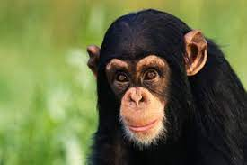

Macaco é um termo de origem africana (provavelmente do banto makako) utilizado como designação comum a todas as espécies de símios ou primatas antropoides. É aplicada restritivamente no Brasil aos cebídeos (ou macacos do Novo Mundo) em geral. No sentido estrito, "macaco" refere-se às espécies de primatas pertencentes ao género Macaca. A designação mico se origina, segundo o Dicionário Aurélio, do caraíba (karib) continental. É bastante usada no Brasil, onde costuma aplicar-se às espécies do gênero Cebus, no Sul, e às espécies de pequeno porte, ou saguis, no Norte. O termo sagui se origina do tupi antigo sagûi e também designa os macacos calitriquídeos de pequeno porte. Ainda segundo Cunha, o termo símio, que também designa os macacos (tendo sido registrado no português dos séculos XVI e XVII), vem do latim simius, de simus, "que tem o nariz chato".
Macacos estão entre os animais preferidos tanto de crianças, quanto de adultos. Por conta de sua semelhança genética com os humanos, eles têm muitas características em comum e são capazes de interagir facilmente com pessoas. Além disso, algumas espécies exibem inteligência e carisma impressionantes.
